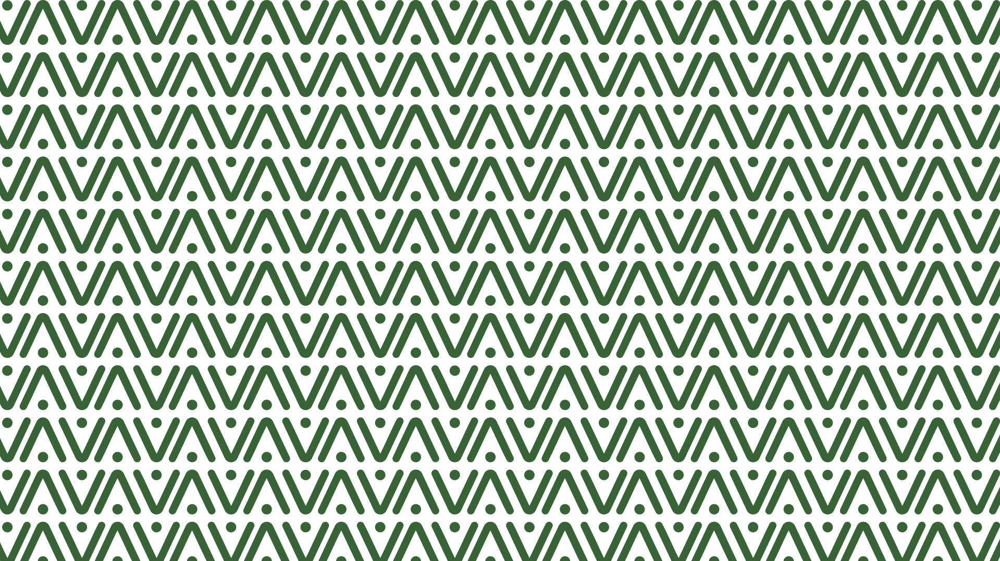

Claim placeholder
Vitalma není zdravotnické zařízení — je to domov. Identita proto nemá působit chladně ani nemocnično, ale vlídně, klidně a důstojně. Stylová a moderní natolik, aby oslovila rodinu, která domov vybírá — a zároveň příjemná a srozumitelná tomu nejdůležitějšímu: seniorovi, který tu bude doma.
Měkký geometrický wordmark s otevřenými, zaoblenými tvary. Vřelý, čitelný, sebevědomý — funguje na světlém i tmavém podkladu.
Špičky písmen V, A a M tvoří charakteristický trojúhelníkový tvar — základ celého vizuálního systému i patternu.
Drobný akcent nad apexem evokuje člověka a „vital" — život. Z něj lze odvodit samostatný symbol.
Kolem loga vždy volný prostor o výšce písmene „V", aby značka dýchala a působila důstojně.
Z písmene V a tečky vzniká samostatný brandmark — malá postava s otevřenou náručí. Použitelný jako ikona aplikace, favicon, odznak na uniformě nebo profilová fotka na sociálních sítích.
Šalvějově zelená s teplou krémovou — žádná agresivní zdravotnická červená. Monochromatická paleta evokuje přírodu, klid a bezpečí.
Opakující se motiv „V + tečka" odvozený přímo z písmen wordmarku. Dává identitě texturu — pro pozadí, obálky, sociální sítě i interiér.

Ukázka nasazení identity na klíčové formáty ze zadání.